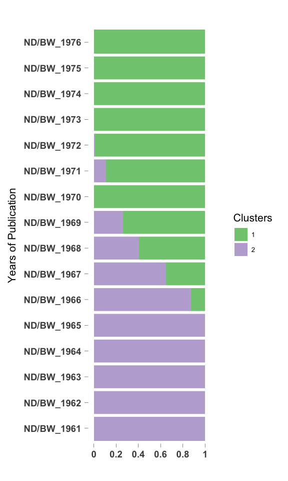
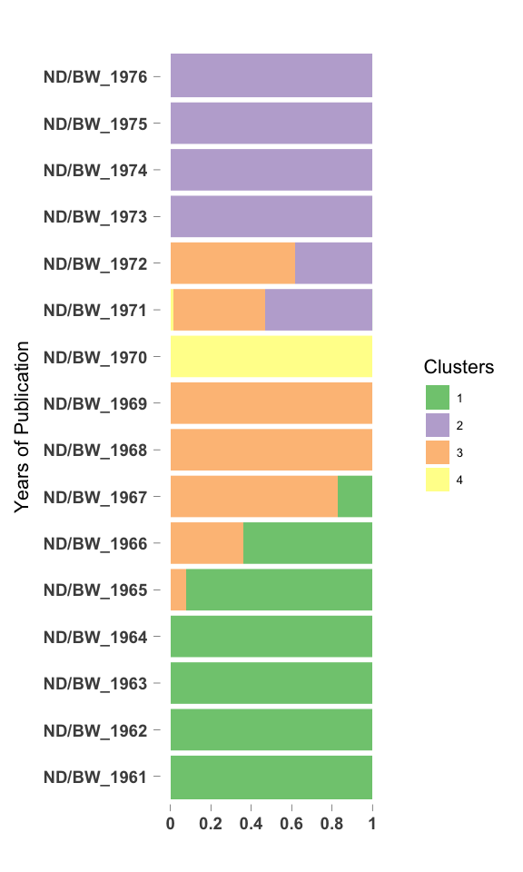
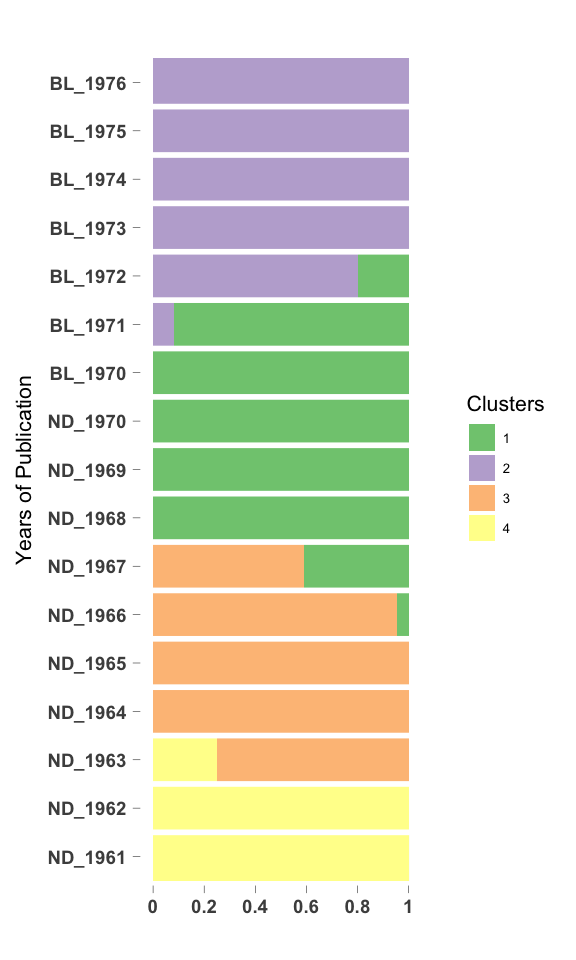

library(CountClust)## Loading required package: ggplot2library(ggplot2)We apply CountClust on the word frequencies for yearly data from Negro Digest, Black World articles. In one case - we include terms like black, negro and afroamerican terms, the usage of which are known to have changed over the years. In other case, we remove these terms and see which terms affect the clustering now. Here we present the results for the second case study.
tab_bl_nd <- get(load("../output/table_word_frequencies_BL_ND.rda"))
all_words_bl_nd <- get(load("../output/all_words_BL_ND.rda"))Next we fit the CountClust model to the tabulated counts data. We first remove the words that occur in only one or two years of text data.
low_occur_words <- apply(tab_bl_nd, 2, function(x) return(sum(x[x!=0])))
tab2_bl_nd <- tab_bl_nd[, which(low_occur_words > 2)]Also remove the words that have just two characters as they are usually suffix-es or wrongly interpreted characters.
tab3_bl_nd <- tab2_bl_nd[, which(nchar(colnames(tab2_bl_nd)) > 2)]
negro_words <- grep("negro", colnames(tab3_bl_nd))
black_words <- match(c("black", "blacks", "blackman"), colnames(tab3_bl_nd))
afroamerican_words <- match(c("african", "afroamerican"), colnames(tab3_bl_nd))
tab4_bl_nd <- tab3_bl_nd[, - c(negro_words, black_words, afroamerican_words)]topic_clus <- list()
for(k in 2:4){
topic_clus[[k]] <- maptpx::topics(tab4_bl_nd, K=k, tol = 1)
}
save(topic_clus, file = "../output/BL_ND_CountClust_no_black_negro.rda")topic_clus <- get(load("../output/BL_ND_CountClust_no_black_negro.rda"))omega <- topic_clus[[2]]$omega
annotation <- data.frame(
sample_id = paste0("X", c(1:NROW(omega))),
tissue_label = factor(rownames(omega),
levels = rownames(omega)))
rownames(omega) <- annotation$sample_id;
StructureGGplot(omega = omega,
annotation = annotation,
palette = RColorBrewer::brewer.pal(8, "Accent"),
yaxis_label = "Years of Publication",
order_sample = TRUE,
axis_tick = list(axis_ticks_length = .1,
axis_ticks_lwd_y = .1,
axis_ticks_lwd_x = .1,
axis_label_size = 7,
axis_label_face = "bold"))
out <- ExtractTopFeatures(topic_clus[[2]]$theta, top_features = 50, method = "poisson", options = "min")
driving_words <- t(apply(out$indices, c(1,2), function(x) return(rownames(topic_clus[[2]]$theta)[x])))
driving_words[1:20,]## [,1] [,2]
## [1,] "baraka" "chenault"
## [2,] "theater" "civil_rights"
## [3,] "yuh" "libby"
## [4,] "tanzania" "cent"
## [5,] "imamu" "lennie"
## [6,] "oau" "barney"
## [7,] "liberation" "joey"
## [8,] "afrikan" "smythe"
## [9,] "moma" "dilman"
## [10,] "unita" "segregation"
## [11,] "broadside" "baptists"
## [12,] "ali" "rashman"
## [13,] "amiri" "maury"
## [14,] "afro" "twain"
## [15,] "euroamerican" "righters"
## [16,] "nana" "eaton"
## [17,] "mpla" "henson"
## [18,] "ezeulu" "said"
## [19,] "angela" "talley"
## [20,] "barakas" "colored"omega <- topic_clus[[3]]$omega
annotation <- data.frame(
sample_id = paste0("X", c(1:NROW(omega))),
tissue_label = factor(rownames(omega),
levels = rownames(omega)))
rownames(omega) <- annotation$sample_id;
StructureGGplot(omega = omega,
annotation = annotation,
palette = RColorBrewer::brewer.pal(8, "Accent"),
yaxis_label = "Years of Publication",
order_sample = TRUE,
axis_tick = list(axis_ticks_length = .1,
axis_ticks_lwd_y = .1,
axis_ticks_lwd_x = .1,
axis_label_size = 7,
axis_label_face = "bold"))
out <- ExtractTopFeatures(topic_clus[[3]]$theta, top_features = 50, method = "poisson", options = "min")
driving_words <- t(apply(out$indices, c(1,2), function(x) return(rownames(topic_clus[[3]]$theta)[x])))
driving_words[1:20,]## [,1] [,2] [,3]
## [1,] "afrikan" "libby" "chenault"
## [2,] "unita" "dilman" "johnnyboy"
## [3,] "mpla" "smythe" "yuh"
## [4,] "angela" "maury" "reva"
## [5,] "barakas" "eaton" "rashman"
## [6,] "naz" "mitch" "kurunmi"
## [7,] "kuumba" "hosea" "shug"
## [8,] "alsc" "nalc" "veneuse"
## [9,] "zaire" "sokagakkai" "baga"
## [10,] "ignatius" "manny" "davey"
## [11,] "prez" "bearcat" "moma"
## [12,] "eec" "despres" "mckissick"
## [13,] "evonne" "segun" "hondo"
## [14,] "theater" "fremont" "mma"
## [15,] "watergate" "peary" "nell"
## [16,] "brierre" "pastors" "lorca"
## [17,] "olaad" "kabbo" "sri"
## [18,] "ald" "satch" "sug"
## [19,] "winesellers" "essie" "apa"
## [20,] "burnside" "luke" "pip"omega <- topic_clus[[4]]$omega
annotation <- data.frame(
sample_id = paste0("X", c(1:NROW(omega))),
tissue_label = factor(rownames(omega),
levels = rownames(omega)))
rownames(omega) <- annotation$sample_id;
StructureGGplot(omega = omega,
annotation = annotation,
palette = RColorBrewer::brewer.pal(8, "Accent"),
yaxis_label = "Years of Publication",
order_sample = TRUE,
axis_tick = list(axis_ticks_length = .1,
axis_ticks_lwd_y = .1,
axis_ticks_lwd_x = .1,
axis_label_size = 7,
axis_label_face = "bold"))
out <- ExtractTopFeatures(topic_clus[[4]]$theta, top_features = 50, method = "poisson", options = "min")
driving_words <- t(apply(out$indices, c(1,2), function(x) return(rownames(topic_clus[[4]]$theta)[x])))
driving_words[1:20,]## [,1] [,2] [,3] [,4]
## [1,] "johnnyboy" "afrikan" "chenault" "nalc"
## [2,] "yuh" "unita" "libby" "bearcat"
## [3,] "reva" "mpla" "smythe" "satch"
## [4,] "kurunmi" "angela" "dilman" "corinna"
## [5,] "shug" "barakas" "rashman" "keckley"
## [6,] "selby" "naz" "eaton" "marihuana"
## [7,] "arkestra" "kuumba" "righters" "mumba"
## [8,] "baga" "alsc" "manny" "somers"
## [9,] "moma" "zaire" "mitch" "labresch"
## [10,] "davey" "ignatius" "despres" "puddin"
## [11,] "hondo" "prez" "sokagakkai" "corinnas"
## [12,] "mma" "eec" "henson" "ciaa"
## [13,] "students" "evonne" "segun" "carsons"
## [14,] "mckissick" "watergate" "kabbo" "jabloski"
## [15,] "lorca" "brierre" "essie" "innings"
## [16,] "sug" "olaad" "echewa" "diocese"
## [17,] "sri" "ald" "peary" "tca"
## [18,] "pip" "winesellers" "veneuse" "bratton"
## [19,] "cdc" "burnside" "macrinus" "lennie"
## [20,] "soulbook" "umuaro" "civil_rights" "flynn"This R Markdown site was created with workflowr